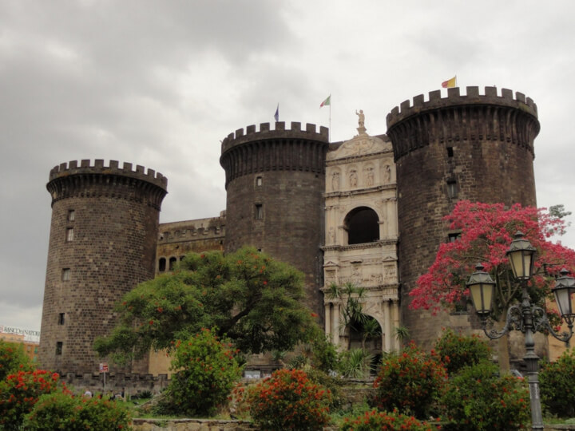

Sejarah
Sejarah Napoli panjang dan beragam, berasal dari pemukiman Yunani yang didirikan di wilayah Napoli
pada milenium ke-2 SM. Selama akhir Zaman Kegelapan Yunani, koloni daratan yang lebih besar
(awalnya dikenal sebagai Parthenope) berkembang sekitar abad 9-8 SM, dan didirikan kembali sebagai
Neapolis pada abad ke-6 SM, ia memegang peran penting dalam
Magna Graecia.
Budaya Yunani Napoli penting bagi masyarakat Romawi kemudian. Ketika kota menjadi bagian dari
Republik Romawi di provinsi tengah Kekaisaran, itu adalah pusat budaya utama.
Di abad pertengahan, Napoli adalah ibu kota kerajaan Napoli selama berabad-abad. Kota ini telah
menyaksikan naik turunnya beberapa peradaban dan budaya, yang masing-masing meninggalkan jejak
dalam seni dan arsitekturnya, dan selama masa
Renaisans dan
Enlightenment
adalah pusat budaya utama. Selama Perang Neapolitan, kota itu memberontak melawan raja Bourbon,
memacu dorongan awal menuju unifikasi Italia.
Saat ini, Napoli adalah bagian dari Republik Italia, kota terbesar ketiga (wilayah tengah)
menurut jumlah penduduk setelah Roma dan Milano, dan memiliki wilayah metropolitan terbesar kedua
atau ketiga di Italia. Napoli menjadi salah satu daerah perkotaan tertua yang terus dihuni di dunia
Geografi

Kota ini terletak di Teluk Napoli, di pantai barat Italia selatan, naik dari permukaan laut ke ketinggian 450 meter
(1.480 kaki). Sungai-sungai kecil yang dulunya melintasi pusat kota telah ditutup oleh konstruksi. Sungai-sungai itu terletak di
antara dua daerah vulkanik terkenal, Gunung Vesuvius dan Campi Flegrei (Phlegraean Fields). Pulau Procida, Capri dan
Ischia semua dapat dicapai dari Napoli dengan hidrofoil dan feri. Sorrento dan Pantai Amalfi terletak di selatan kota,
sedangkan reruntuhan Romawi Pompeii, Herculaneum, Oplontis dan Stabiae, yang hancur akibat letusan Vesuvius pada 79 M,
juga terlihat di dekatnya. Kota pelabuhan Pozzuoli dan Baia, yang merupakan bagian dari fasilitas angkatan laut Romawi di
Portus Julius, terletak di sebelah barat kota.
Demografi
Pada 2012, populasi Napoli berjumlah sekitar 960.000. Wilayah metropolitan Napoli yang lebih luas,
kadang-kadang dikenal sebagai "Greater Naples", memiliki populasi sekitar 4,4 juta. Profil demografis
untuk provinsi Neapolitan secara umum relatif muda: 19% berusia di bawah 14 tahun, sementara 13%
berusia di atas 65 tahun, dibandingkan dengan rata-rata nasional masing-masing 14% dan 19%.
Napoli memiliki persentase perempuan lebih tinggi (52,5%) dibandingkan laki-laki (47,5%). Napoli saat ini
memiliki angka kelahiran yang lebih tinggi daripada bagian lain Italia, dengan 10,46 kelahiran
per 1.000 penduduk, dibandingkan dengan rata-rata Italia 9,45 kelahiran.
Populasi kota meningkat dari 621.000 pada tahun 1901 menjadi 1.226.000 pada tahun 1971,
sebelum menurun menjadi 957.811 pada tahun 2011 karena penduduk kota pindah ke pinggiran kota.
Menurut sumber yang berbeda, wilayah metropolitan Napoli adalah wilayah metropolitan terpadat kedua
di Italia setelah Milan (dengan 4.434.136 jiwa menurut Svimez Data) atau yang ketiga
(dengan 3,1 juta jiwa menurut OECD). Selain itu, Napoli adalah kota besar terpadat di Italia,
dengan sekitar 8.182 orang per kilometer persegi. Namun, telah terjadi penurunan kepadatan penduduk
yang mencolok sejak tahun 2003, ketika angkanya lebih dari 9.000 orang per kilometer persegi.
Kelompok penduduk asing terbesar di tahun 2017. Berbeda dengan banyak kota di Italia utara,
terdapat relatif sedikit imigran asing di Napoli; 94,3% penduduk kota adalah warga negara Italia.
Pada 2017, ada total 58.203 orang asing di kota Napoli; mayoritas dari mereka kebanyakan berasal
dari Sri Lanka, Cina, Ukraina, Pakistan dan Rumania. Statistik menunjukkan bahwa, di masa lalu,
sebagian besar imigran di Napoli adalah wanita. Ini terjadi karena imigran laki-laki di Italia
cenderung pergi ke utara yang lebih kaya.
Wisata
Napoli kaya akan tradisi, sejarah, seni, dan kebudayaan. Dikenal sebagai tempat asal pizza serta
terkenal akan es krimnya (dinamakan neopolitano). Pusat kota bersejarah Napoli "Comune di Napoli"
adalah yang terbesar di Eropa dan telah ditetapkan sebagai Situs Warisan Dunia UNESCO. Napoli
telah lama menjadi pusat seni dan arsitektur, dihiasi dengan gereja, kastil, dan istana abad
pertengahan, Barok, dan Renaisans. Pada abad ke-18, Napoli mengalami periode neoklasikisme,
menyusul penemuan reruntuhan Romawi yang sangat utuh di Herculaneum dan Pompeii.
Berikut ini beberapa tujuan wisata yang epik :
Gunung Vesuvius
Diklasifikasikan sebagai Stratovolcano, Gunung Vesuvius mendominasi cakrawala dan lanskap di sekitar
Napoli dan merupakan gunung berapi legendaris yang terkenal meletus pada tahun 79 M dan menyebabkan
kehancuran dan penguburan Pompeii dan Herculaneum. Vesuvius berdiri sebagai satu-satunya gunung berapi
di daratan Eropa yang telah meletus dalam 100 tahun terakhir. Gunung ini dianggap sangat berbahaya
karena banyaknya pemukiman manusia yang berada di zona bahayanya. Saat ini, Anda dapat mengikuti tur
bus dari Napoli untuk mengunjungi fenomena alam yang luar biasa ini dan mendaki lerengnya untuk
mengintip ke dalam kawah. Pendakian akan memakan waktu antara 20-30 menit dan dianggap tidak terlalu
menantang. Pemandangan dari atas pada hari yang cerah sungguh fantastis dan kaldera serta kawahnya juga
sangat menarik.
Reruntuhan Pompeii
Pompeii adalah kota kuno yang berada di bawah bayang-bayang Gunung Vesuvius yang ikonik. Permukiman
ini sangat maju dan luas, dan hancur pada puncaknya selama letusan dahsyat gunung berapi pada 79 Masehi.
Terlepas dari penyebab kehancuran dan jumlah lahar yang mengalir di atas kota, Pompeii berdiri saat ini
dalam kondisi yang fantastis. Hal ini disebabkan oleh lapisan abu yang sangat besar yang mengendap di
atas sebagian reruntuhan dan dengan demikian bertindak sebagai pelindung. Saat ini, Anda dapat
mengunjungi Pompeii dan berjalan melalui reruntuhan yang luas. Pemandangan yang sangat menarik termasuk
Amphitheatre, case del Fauno, Kuil Apollo dan Kuil Jupiter. Selain itu, Anda dapat menemukan gips dari
banyak korban malang yang terkubur di bawah abu dan tetap terkunci dalam pose kematian mereka untuk
selamanya.
Museum Arkeologi Nasional Napoli
Bertempat di sebuah bangunan berornamen indah yang dibuat pada tahun 1750-an, museum ini dulunya
berfungsi sebagai barak militer dan kavaleri, dan diubah menjadi museum di tahun-tahun berikutnya.
Museum ini terletak di sebelah utara pelabuhan, tetapi ada stasiun Metro tepat di sebelah gedung. Di
dalamnya Anda dapat menemukan banyak koleksi yang mencakup beragam artefak Romawi dan Yunani ditambah
pilihan karya dari Pompeii dan Herculaneum. Koleksi ini mencakup pilihan patung marmer yang
menggambarkan pemandangan dari mitologi kuno, mosaik indah dari reruntuhan Pompeii, dan koleksi besar
benda dari Mesir kuno seperti sisa mumi dan topeng kematian. Siapa pun yang tertarik dengan sejarah
kuno dan arkeologi akan menemukan museum ini sebagai tempat yang sangat menarik untuk dikunjungi.
Museum tersebut merupakan museum arkeologi Italia paling penting dan dianggap menjadi salah satu yang paling penting di dunia.
San Gennaro Catacombs
Pernahkah Anda ingin menjelajahi dunia bawah tanah rahasia yang menyimpan banyak detail dan lorong?
Inilah tepatnya yang disediakan Katakombe San Gennaro dan Anda dapat menemukan pintu masuk ke tempat
dunia lain ini di dekat Basilika dell’Incoronata di bagian utara Napoli. Setelah berada di bawah tanah,
Anda akan menemukan jaringan terowongan dan lorong yang dilapisi dengan kuburan dan ruang bawah tanah
yang berasal dari sejarah kuno. Tersebar di dua tingkat, lantai bawah berisi lebih dari 3000 kuburan
mengejutkan dan memiliki penerangan redup untuk mempertahankan perasaan bawah tanah yang menyeramkan.
Tingkat atas lebih luas tetapi sama menariknya dan berisi banyak lukisan dinding dan karya seni yang
mendetail. Tur katakombe berpemandu akan memberikan pengalaman yang tak terlupakan dan wawasan sejati
tentang sejarah Napoli.
Reruntuhan Herculaneum
Kota lain yang hancur setelah letusan Vesuvius tahun 79 M adalah Herculaneum. Kota ini adalah kota
yang kurang dikenal dari Pompeii tetapi sama menarik dan pemandangan yang fantastis untuk dikunjungi.
Meskipun kota itu terletak lebih jauh dari Vesuvius daripada Pompeii, kota itu masih hancur total.
Herculaneum sebenarnya dianggap sebagai contoh yang lebih terawat daripada Pompeii dan masih memiliki
beberapa struktur kayu, bingkai, dan atap yang masih utuh. Pemandangan menarik di dalam kompleks ini
termasuk Villa of the Papyri dan House of Argus yang keduanya berisi lukisan dinding yang indah.
Selanjutnya ada juga sederet sisa kerangka yang menunjukkan matinya sekelompok
orang malang ini. Jika Anda mengunjungi Pompeii, pastikan Anda mengunjungi Herculaneum juga untuk
mendapatkan wawasan mendetail tentang periode waktu kuno.
Castel Nuovo

Kastil Nuovo menonjol sebagai fitur utama di kaki langit Napoli dan merupakan salah satu pemandangan
pertama yang akan dilihat orang yang masuk melalui kapal pesiar. Terletak di dekat Piazza del Plebiscito
yang terkenal, kastil ini mudah diakses dan merupakan salah satu situs bersejarah utama di Napoli.
Pembangunan Kastil Nuovo, juga disebut Maschio Angioino, dimulai pada 1279 di bawah pemerintahan Charles I
dari Anjou, atas dasar rencana arsitek Prancis Pierre de Chaule. Kastil ini memiliki 5 menara melingkar
dan lengkungan kemenangan fantastis yang ditambahkan di kemudian hari. Posisi strategis memberinya
karakteristik tidak hanya sebagai kediaman kerajaan, tetapi juga sebuah benteng. Ikuti tur kastil dan
kagumi menara-menara yang indah, berdirilah di dalam halaman tengah, kagumi langit-langit yang dicat
di Baron's Hall, dan daki benteng kastil untuk melihat pemandangan Napoli dan pelabuhan yang menakjubkan.
Cappella Sansevero
Ada banyak kapel dan gereja di jantung Napoli, dan Kapel Sansevero adalah contoh yang sangat bagus.
Dibuat pada tahun 1590, kapel ini dulunya merupakan bangunan pribadi untuk Duke of Torremaggoire dan
kemudian digunakan sebagai kapel pemakaman keluarga dari tahun 1613. Terletak di pusat Napoli, kapel
tersebut tidak jauh dari Pelabuhan dan Kastil Nuovo. Meskipun kapel ini cukup polos dan sederhana dari
luar, namun interiornya cukup spektakuler dan merupakan sorotan sejati. Kapel berisi sejumlah besar
karya seni dan beberapa patung terkenal. Sebuah lukisan dinding yang detil dan megah menghiasi
langit-langit dan banyak patung marmer yang berjaga di setiap pilar. Pusat dari tampilan yang fantastis
ini adalah patung "Kristus Terselubung" yang indah yang dibuat oleh Giuseppe Sanmartino.
Castel dell'Ovo

Saat Anda memasuki pelabuhan di Napoli, Anda pasti akan melihat kastil tepi laut yang menakjubkan
ini. Dulunya sebuah pulau, tanah tempat kastil berdiri sekarang terhubung ke daratan dan dapat diakses
dengan jalan setapak. Sebagai benteng tertua yang tersisa di Napoli, Castel dell'Ovo (Kastil Telur)
dibangun pada awal abad ke-6 SM dan beberapa bentuk struktur pertahanan telah berdiri sejak saat itu.
Nama kastil berasal dari legenda tentang penyair Romawi Virgil, yang memiliki reputasi di Abad Pertengahan
sebagai penyihir hebat dan peramal masa depan. Dalam legenda, Virgil meletakkan telur ajaib ke dalam
fondasi untuk menopang benteng. Itu tetap di sana bersama dengan tulang belulangnya, dan jika telur ini
dipecahkan, kastil itu akan dihancurkan dan serangkaian peristiwa bencana untuk Napoli akan menyusul.
Kastil ini terbuka untuk umum dan merupakan struktur yang fantastis untuk dijelajahi. Berjalanlah melalui
lorong dan lengkungan dan lihatlah ke laut Mediterania. Anda juga dapat menemukan beberapa pameran seni dan
pameran tentang sejarah kastil.
Pelabuhan Napoli
Napoli adalah pelabuhan yang sangat sibuk dan perdagangan laut adalah sumber utama ekonomi kota.
Jaringan pelabuhan dibagi menjadi beberapa dermaga terpisah dan merupakan sarang aktivitas yang
sesungguhnya setiap saat sepanjang hari. Membentang dari Castel Nuovo hingga Piazza San Giovanni
Battista, Anda dapat dengan mudah menghabiskan waktu berjam-jam berjalan melalui dermaga dan pelabuhan
serta menyaksikan bisnis menarik yang terjadi di sini. Selain itu, jika Anda terus ke barat, Anda akan
menemukan Porto di Mergellina yang penuh dengan restoran dan kafe trendi serta memiliki suasana semarak
yang luar biasa. Datanglah ke sini untuk mencicipi kehidupan lokal dan kagumi berbagai kapal pesiar
yang berlabuh di pelabuhan.
Piazza del Plebiscito
Tidak diragukan lagi alun-alun utama di Napoli, Piazza del Plebiscito menampilkan Istana Kerajaan
dan Basilika Kerajaan dan merupakan tempat yang benar-benar fantastis untuk dikunjungi. Ruang terbuka
yang luas ini dipenuhi dengan bangunan dan patung penting dan selain dari struktur yang disebutkan di
atas, juga terdapat Palazzo Salerno, Istana Prefektur, dan patung yang didedikasikan untuk Charles III
dari Spanyol. Pilar setengah lingkaran dari Basilica Royal membentang dan membingkai alun-alun dengan
indah. Gunakan tempat ini sebagai titik awal untuk tur Anda di Napoli dan pastikan untuk mengunjungi
bangunan bersejarah yang indah yang ada di sini.
San Domenico Maggiore
Gereja lain yang didekorasi dengan indah di Napoli, San Domenico Maggiore didirikan oleh para
biarawan Dominika dan dibangun pada tahun 1324. Gereja ini terletak di pusat kota tua Napoli dekat
universitas dan halte Metro Dante. Sementara eksterior strukturnya tidak terlalu mengesankan,
interiornya adalah suguhan nyata. Penuh dengan karya seni renaisans, pahatan, dan dekorasi, gereja ini
sangat mewah. Langit-langit berpanel dilapisi emas dan altar tinggi juga merupakan mahakarya yang
menakjubkan. Selain itu, ada juga "ruang harta karun" yang berisi sejumlah besar artefak keagamaan,
pakaian, aksesori, dan pernak-pernik lainnya.
Naples Cathedral
Berdiri sejak abad ke-13, Katedral Duomo adalah bangunan megah dan berdiri sebagai gereja utama di
Napoli dan di Italia selatan. Terletak di Via Duomo, katedral dapat diakses melalui halte metro Museo
tetapi juga memiliki layanan bus reguler yang melewati fasad depan. Bangunan religius ini menggabungkan
berbagai gaya termasuk Gotik, Renaisans, dan Barok. Hal ini disebabkan oleh restorasi dan perubahan yang
telah dilakukan sejak pembuatannya. Di luar, fasad depan memiliki menara pusat yang besar dan banyak
pahatan berukir serta karya batu. Di dalam, knave utama dibingkai oleh serangkaian tiang besar dan
dekorasinya sangat indah. Jangan lupa untuk mengunjungi kapel San Gennaro yang didekorasi dengan rapi
yang memiliki altar yang dihias dengan indah dan dua bejana berisi darah para suci.
Distrik Santa Lucia
Untuk benar-benar mengalami Napoli dari perspektif lokal dan menyerap beberapa budaya, pergilah ke
distrik Santa Lucia. Terletak di sebelah barat Piazza del Plebiscito, Santa Lucia mengacu pada area di
sekitar Castel dell'Ovo. Lingkungan ini telah menjadi subjek dan inspirasi bagi beberapa lagu Neapolitan
tradisional, yang paling terkenal berjudul Santa Lucia. Banyak penafsiran lirik yang dikenal dan diakui
di seluruh dunia. Distrik ini memiliki segudang jalan sempit berbatu yang mengarah ke laut dan menawarkan
berbagai toko kerajinan, hotel, restoran, kafe, dan toko. Di sini Anda dapat mengalami kehidupan
Neapolitan yang terbaik. Penduduk setempat akan berjalan di jalanan, menjalankan bisnis sehari-hari
mereka, pakaian tergantung di tali cucian dan anak-anak bermain tanpa peduli tentang dunia.
Pallazo Reale
Istana Kerajaan yang menakjubkan ini menjadi pusat perhatian di Piazza del Plebiscito dan terletak
di seberang Basilica Reale. Fasad depan bangunan ini menampilkan rangkaian bingkai hitam simetris,
tampilan cokelat, dan banyak jendela untuk menciptakan tampilan resmi dan mengesankan. Selanjutnya di
dasar istana berdiri 12 patung rinci Raja Napoli masa lalu dari Roger dari Sisilia hingga Frederick II
Kaisar Romawi Suci. Di dalam gedung mewah ini terdapat serangkaian kamar terpelihara yang menakjubkan
yang penuh dengan dekorasi hiasan. Lorong dan tangga awal sangat mewah dan ruang tahta serta teater
negara juga sama fantastisnya. Tur interior dan kamar adalah suatu keharusan dan akan melengkapi
kunjungan Anda ke bangunan bersejarah yang indah ini.
Pulau Capri
Capri adalah pulau kecil berpenghuni yang terkenal dengan pemandangannya yang dramatis, garis pantai
berbatu yang dihiasi gua-gua yang indah dan desa-desa Italia yang kuno dan menawan. Perjalanan perahu
dari pelabuhan Napoli memakan waktu kurang dari dua jam dan ada feri reguler yang melakukan perjalanan
antara pulau dan daratan, dan Sorrento yang berdekatan. Berjalanlah melalui Marina Grande yang indah,
kagumi perahu-perahu di pelabuhan dan kemudian berangkat untuk menjelajahi pulau. Jangan lupa melakukan
perjalanan untuk melihat Blue Grotto Sea Cave yang terkenal atau pemandangan dari puncak Monte Solaro.